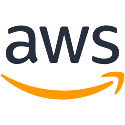

🖥기술 스택


- 
사용자에게 더 나은 가치를 제공하기 위해, 안정적이고 확장 가능한 시스템을 구축하는 데 깊은 흥미를 느낍니다. 새로운 기술을 배우고 적용하며 꾸준히 성장하는 개발자가 되겠습니다.
사용자의 취향과 여행 스타일에 맞는 여행지를 추천하는 웹 서비스입니다. Spring Boot와 React를 사용하여 개발하였으며, 주요 기능으로는 사용자 기반 필터링 추천 알고리즘 구현, 여행지 정보 크롤링 및 데이터베이스 구축, 그리고 사용자들이 여행 후기를 공유할 수 있는 커뮤니티 기능이 있습니다.
자신의 재능을 판매하거나 필요한 재능을 구매할 수 있는 온라인 플랫폼입니다. Django를 기반으로 RESTful API를 설계했으며, 실시간 채팅 기능을 위해 WebSocket을 도입했습니다. 또한, 안전한 거래를 위해 포트원 결제 API를 연동하고, 관리자 페이지를 통해 사용자 및 거래 내역을 효율적으로 관리할 수 있도록 구현했습니다.
Terraform을 사용하여 AWS 클라우드 환경에 확장 가능하고 탄력적인 인프라를 코드로 구축하는 프로젝트를 진행했습니다. VPC, EC2, S3, RDS 등 주요 AWS 서비스를 활용하여 3-Tier 아키텍처를 설계하고, Jenkins와 Docker를 이용해 CI/CD 파이프라인을 구축하여 배포 자동화를 구현했습니다.
Email: skawnsrn94@gmail.com
GitHub: https://github.com/jk-Nam